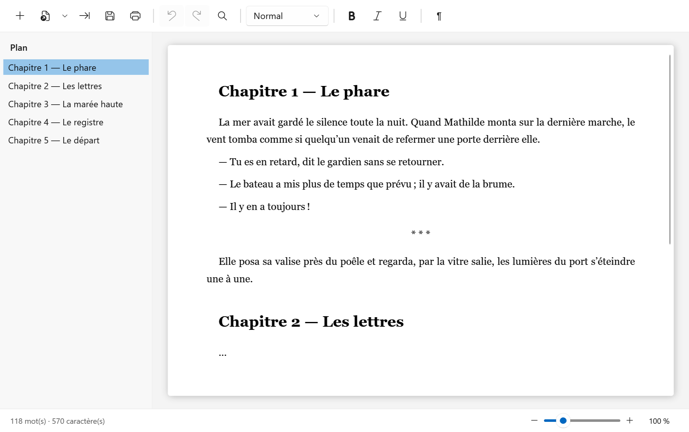
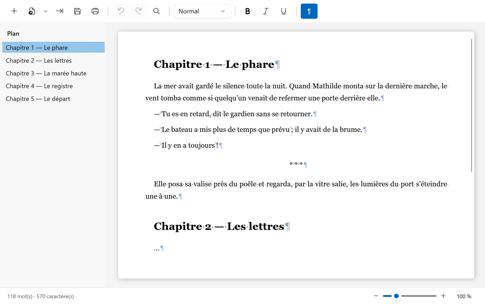

Écrire un roman,
sans toucher à la mise en forme.
Mots est un petit traitement de textes pour Windows. Vous choisissez le style du paragraphe, il s’occupe du reste. Vos documents restent de vrais fichiers Word.
Télécharger Mots Lire la documentation
Windows 10 ou 11, 64 bits · licence MIT · aucun autre logiciel à installer

Tout est piloté par les styles
Pas de police, de taille, d’alignement ni de liste à régler à la main. Un paragraphe a un style, et le style décide de tout.
-
Trois styles suffisent
Normal pour le texte, Titre 1 pour les chapitres (chacun commence sur une nouvelle page), Ellipse pour le séparateur de scène.
-
Un plan toujours à portée
Chaque chapitre apparaît dans le plan, à gauche. Un clic, et vous y êtes ; le plan suit votre curseur pendant que vous écrivez.
-
De vrais fichiers Word
Mots enregistre en
.docx: Word l’ouvre normalement. Un manuscrit Word existant s’importe, et les styles que Mots ne connaît pas sont signalés au lieu d’être perdus en silence.
Une typographie française soignée
Le bouton ¶ (Ctrl+Maj+8) révèle les caractères non imprimables : espaces, espaces insécables, tabulations, sauts de ligne, fins de paragraphe.
- Espace insécable : Ctrl+Maj+Espace
- Espace insécable fine : Ctrl+Alt+Maj+Espace
- Un tiret cadratin en début de ligne, pour un dialogue, est suivi automatiquement d’une espace insécable. Deux Ctrl+Z annulent l’espace, puis le tiret.

Comment ça se passe
Ouvrir
Un nouveau document, un document enregistré par Mots, ou un manuscrit Word à importer.
Écrire
Le texte, rien que le texte. Entrée après un titre démarre un paragraphe normal.
Structurer
Le style se change dans la barre d’outils ou au clavier : Ctrl+0 et Ctrl+1.
Enregistrer
Un fichier
.docx, que vous retrouvez dans la liste des documents récents.
Installation
Mots est un seul fichier, autonome : téléchargez-le et lancez-le.
Télécharger la dernière version Toutes les versions
Pour le compiler vous-même, avec le SDK .NET 10 :
git clone https://github.com/ymauray/mots.git
cd mots
dotnet publish Mots.slnx -c ReleaseMots n’ouvre que les documents qu’il a lui-même enregistrés. Pour reprendre un document Word existant, utilisez Importer.